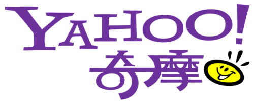
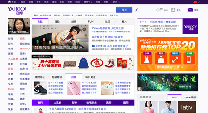

Yahoo奇摩入口網站公司簡介
歷史沿革

2001年2月，雅虎台灣與奇摩站合併營運，以人員、品牌與產品服務為三大整合要項；6月，雅虎台灣與奇摩站會員帳號合併；10月，Yahoo奇摩正式設立；拍賣服務啟用。推出二支電視廣告影片《每天都Yahoo奇摩》及Yahoo奇摩實體公車，在台灣北、中、南三區舉行活動。
2002年7月，筆記服務終止。
2003年8月，電子郵件服務調整，由20MB調整為6MB。
2004年3月，與興奇科技合作推出「Yahoo奇摩購物中心」，由興奇科技獨家經營；10月，電子郵件服務調整，由6MB調整為100MB；11月，聊天室服務終止、知識+服務啟用。
2005年11月，部落格服務啟用。
2006年8月，網路拍賣服務開始收取交易手續費；12月，併購無名小站。
2007年3月，與KKBOX共同合作營運音樂通服務；5月，個人網頁、造型精靈服務終止、電子郵件服務調整，由100MB調整為無限；同月，Yahoo!奇摩拍賣推出輕鬆付金流平台；6月，大摩域BBS服務終止；10月，個人電子報服務停止，同時公司業種調整、由子公司變更為分公司，並由香港雅虎負責管理。
2008年3月，影音分享服務終止（由無名影音取代）；8月，卡漫及笑話服務終止，正式併購興奇科技並更名為Yahoo奇摩購物中心。2009年3月，公事包服務終止。4月，成立「Yahoo奇摩超級商城」，目前由伽馬國際事業有限公司行銷招商。9月，雅虎美國總部決定將全球新聞平台的產品開發轉移至台灣，統整目前Yahoo!新聞在全球各地共9個平台、26個版本。
2007/04/26 拍賣輕鬆付上線。
2010年7月，與愛情公寓合作，而提供會員檔案移至愛情公寓，並於2010年11月終止交友服務。 2011年4月26日，Yahoo奇摩家族服務終止。
2013年1月1日，迷你筆服務中止[4]。1月5日，停止提供輸入法服務。同時將輸入法程式原始碼開放至開源碼社群，開發者可以運用與更新技術。[5]8月30日，宣布於2013年12月26日全面終止旗下部落格與無名小站服務。12月26日，無名小站與Yahoo奇摩部落格正式停止服務。
2014年9月，Yahoo!奇摩拍賣改版並全面採用輕鬆付。
2015年3月10日，Yahoo奇摩宣布在這天進行改版首頁[6]6月15日，Yahoo! Maps正式停止服務。[7]8月30日，宣布Pipes服務中止。
2016年10月6日，Yahoo!奇摩拍賣與中國信託合作推出第三方支付平台-易付。
2016年8月9日，推出Yahoo TV服務，主打跨螢直播和社群互動，並且自製直播節目。
2017年4月10日，宣布股市大玩咖服務中止。
2017年12月21日，提供拍賣輕鬆付餘額自動扣抵拍賣費用功能。
2018年4月25日，Verizon Media公司成立，吸收AOL 和 Yahoo 為旗下品牌 ，隸屬於 Verizon，Yahoo!奇摩的營運法人為香港商雅虎資訊股份有限公司台灣分公司，該公司為Verizon Media台灣代表。
提供服務

資訊
新聞
運動
股市
理財
知識+
氣象
房地產
汽機車
Flickr相簿
公益
健康
字典
搜尋
連到第2頁
連到第3頁
連到第4頁